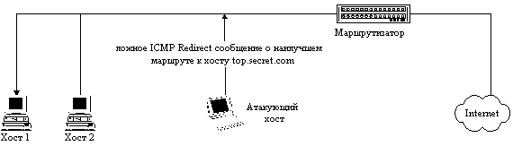
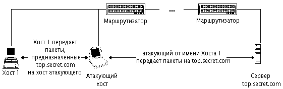
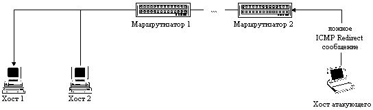
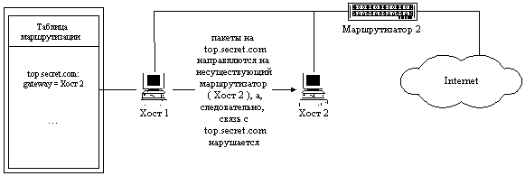

|
4.4. Навязывание хосту ложного маршрута
с использованием протокола ICMP с целью создания в
сети Internet ложного маршрутизатора
Как уже подчеркивалось в п. 3.2.3.1, маршрутизация
в сети Internet играет важнейшую роль для
обеспечения нормального функционирования сети.
Маршрутизация в Internet осуществляется на сетевом
уровне (IP-уровень). Для ее обеспечения в памяти
сетевой ОС каждого хоста существуют таблицы
маршрутизации, содержащие данные о возможных
маршрутах. Каждый сегмент сети подключен к
глобальной сети Internet как минимум через один
маршрутизатор, а, следовательно, все хосты в этом
сегменте и маршрутизатор должны физически
располагаться в одном сегменте. Поэтому все
сообщения, адресованные в другие сегменты сети,
направляются на маршрутизатор, который, в свою
очередь, перенаправляет их далее по указанному в
пакете IP-адресу, выбирая при этом оптимальный
маршрут. Напомним, что в сети Internet для выбора
оптимального маршрута используются специальные
протоколы маршрутизации: RIP, OSPF и т. д.
Рассмотрим, что представляет из себя таблица
маршрутизации хоста. В каждой строке этой
таблицы содержится описание соответствующего
маршрута. Это описание включает: IP-адрес конечной
точки маршрута (Destination), IP-адрес соответствующего
маршрутизатора (Gateway), а также ряд других
параметров, характеризующих этот маршрут. Обычно
в системе существует так называемый маршрут по
умолчанию (поле Destination содержит значение 0.0.0.0, то
есть default, а поле Gateway - IP-адрес маршрутизатора).
Этот маршрут означает, что все пакеты, адресуемые
на IP-адрес вне пределов данной подсети, будут
направляться по указанному default-маршруту, то есть
на маршрутизатор (это реализуется установкой в
поле адреса назначения в Ethernet-пакете аппаратного
адреса маршрутизатора).
Как говорилось ранее, в сети Internet существует
управляющий протокол ICMP, одной из функций
которого является удаленное управление
маршрутизацией на хостах внутри сегмента сети.
Удаленное управление маршрутизацией необходимо
для предотвращения возможной передачи сообщений
по неоптимальному маршруту. В сети Internet
удаленное управление маршрутизацией
реализовано в виде передачи с маршрутизатора на
хост управляющего ICMP-сообщения: Redirect Message.
Исследование протокола ICMP показало, что
сообщение Redirect бывает двух типов. Первый тип
сообщения носит название Redirect Net и уведомляет
хост о необходимости смены адреса
маршрутизатора, то есть default-маршрута. Второй тип
- Redirect Host - информирует хост о необходимости
создания нового маршрута к указанной в сообщении
системе и внесения ее в таблицу маршрутизации.
Для этого в сообщении указывается IP-адрес хоста,
для которого необходима смена маршрута (адрес
будет занесен в поле Destination), и новый IP-адрес
маршрутизатора, на который необходимо
направлять пакеты, адресованные данному хосту
(этот адрес заносится в поле Gateway). Необходимо
обратить внимание на важное ограничение,
накладываемое на IP-адрес нового маршрутизатора:
он должен быть в пределах адресов данной подсети!
Анализ исходных текстов ОС Linux 1.2.8 показал, что
ICMP-сообщение Redirect Net игнорируется данной ОС (это
представляется логичным, так как динамическая
смена маршрутизатора в процессе работы системы
вряд ли необходима. Видимо, можно сделать вывод,
что это сообщение игнорируют и другие сетевые
ОС). Что касается управляющего сообщения ICMP Redirect
Host, то единственным идентифицирующим его
параметром является IP-адрес отправителя, который
должен совпадать с IP-адресом маршрутизатора, так
как это сообщение может передаваться только
маршрутизатором. Особенность протокола ICMP
состоит в том, что он не предусматривает никакой
дополнительной аутентификации источников
сообщений. Таким образом, ICMP-сообщения
передаются на хост маршрутизатором
однонаправлено, без создания виртуального
соединения. Следовательно, ничто не мешает
атакующему послать ложное ICMP-сообщение о смене
маршрута от имени маршрутизатора.
Приведенные выше факты позволяют осуществить
типовую удаленную атаку "Внедрение в
распределенную ВС ложного объекта путем
навязывания ложного маршрута" , рассмотренную
в п. 3.2.3.1.
Для осуществления этой удаленной атаки
необходимо подготовить ложное ICMP Redirect Host
сообщение, в котором указать конечный IP-адрес
маршрута (адрес хоста, маршрут к которому будет
изменен) и IP-адрес ложного маршрутизатора. Далее
это сообщение передается на атакуемый хост от
имени маршрутизатора. Для этого в IP-заголовке в
поле адреса отправителя указывается IP-адрес
маршрутизатора. В принципе, можно предложить два
варианта данной удаленной атаки.
В первом случае атакующий находится в том же
сегменте сети, что и цель атаки. Тогда, послав
ложное ICMP-сообщение, он в качестве IP-адреса
нового маршрутизатора может указать либо свой
IP-адрес, либо любой из адресов данной подсети. Это
даст атакующему возможность изменить маршрут
передачи сообщений, направляемых атакованным
хостом на определенный IP-адрес, и получить
контроль над трафиком между атакуемым хостом и
интересующим атакующего сервером. После этого
атака перейдет во вторую стадию, связанную с
приемом, анализом и передачей пакетов,
получаемых от "обманутого" хоста.
Рассмотрим функциональную схему осуществления
этой удаленной атаки
(рис 4.7):
Рис. 4.7. Внутрисегментное навязывание хосту
ложного маршрута при использовании протокола ICMP.

Рис. 4.7.1. Фаза передачи ложного ICMP Redirect
сообщения от имени маршрутизатора.

Рис. 4.7.2. Фаза приема, анализа, воздействия
и передачи перехваченной информации на ложном сервере.
- передача на атакуемый хост ложного ICMP Redirect Host
сообщения;
- отправление ARP-ответа в случае, если пришел
ARP-запpос от атакуемого хоста;
- перенаправление пакетов от атакуемого хоста на
настоящий маршрутизатор;
- перенаправление пакетов от маршрутизатора на
атакуемый хост;
- при приеме пакета возможно воздействие на
информацию по схеме "Ложный объект РВС"
(п. 3.2.3.3).
В случае осуществления второго варианта
удаленной атаки атакующий находится в другом
сегменте относительно цели атаки. Тогда, в случае
передачи на атакуемый хост ложного ICMP Redirect
сообщения, сам атакующий уже не сможет получить
контроль над трафиком, так как адрес нового
маршрутизатора должен находиться в пределах
подсети атакуемого хоста (см. описанную выше в
этом пункте реакцию сетевой ОС на ICMP Redirect
сообщение), поэтому использование данного
варианта этой удаленной атаки не позволит
атакующему получить доступ к передаваемой по
каналу связи информации. Однако, в этом случае
атака достигает другой цели: нарушается
работоспособность хоста. Атакующий с любого
хоста в Internet может послать подобное сообщение на
атакуемый хост и в случае, если сетевая ОС на
данном хосте не проигнорирует данное сообщение,
то связь между данным хостом и указанным в ложном
ICMP-сообщении сервером будет нарушена. Это
произойдет из-за того, что все пакеты,
направляемые хостом на этот сервер, будут
отправлены на IP-адрес несуществующего
маршрутизатора. Схема этой атаки приведена на
рис. 4.8.
Рис. 4.8. Межсегментное навязывание хосту ложного маршрута
при использовании протокола ICMP, приводящее к отказу в обслуживании.

Рис. 4.8.1. Передача атакующим на хост 1
ложного ICMP Redirect сообщения от имени маршрутизатора 1.

Рис. 4.8.2. Дезинформация хоста 1.
Его таблица маршрутизации содержит информацию
о ложном маршруте к хосту top.secret.com
Эксперимент показал, что оба варианта
рассмотренной удаленной атаки удается
осуществить (как межсегментно, так и
внутрисегментно) на ОС Linux 1.2.8, ОС Windows '95 и ОС Windows NT
4.0. Остальные сетевые ОС, исследованные нами (Linux
2.0.0 и защищенный по классу B1 UNIX), игнорировали
данное ICMP Redirect сообщение (что, не правда ли,
кажется вполне логичным с точки зрения
обеспечения безопасности!).
|